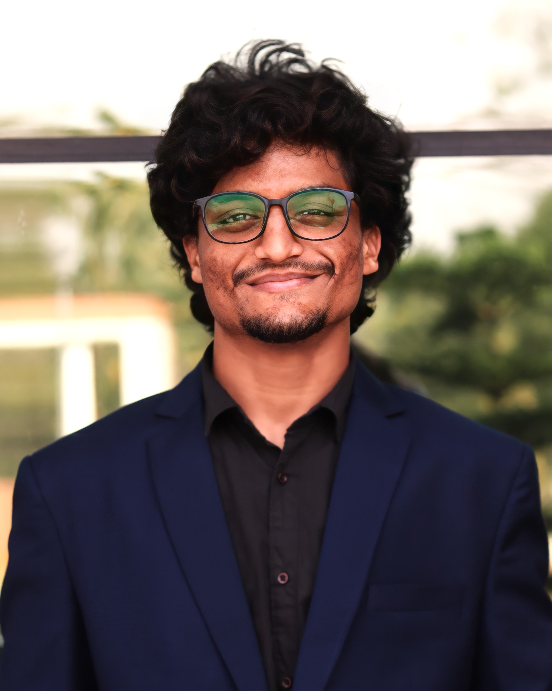

SUNIL KUMAR MULKALA

SUMMARY
I am a passionate software development enthusiast with hands-on experience in web development, AI data annotation, and cloud computing.
A graduate from NIT Silchar, I have delivered impactful projects like real-time video chat and internet banking apps using cutting-edge technologies.
My achievements, including a top 10 position in a Brillio hackathon and a SQL Gold Badge on HackerRank, reflect my problem-solving and technical expertise.
I thrive on learning, innovation, and leveraging my skills to create meaningful solutions in the tech world.
EDUCATION
- B.tech in Electrical Engineering - NIT Silchar, Assam (2019-2023)
- CGPA/Percentage : 8.12 CGPA
- Intermediate - Trinity Junior College Karimnagar, Telangana (2016-2018)
- SSC Board - Green Wood Concept School Mahadevpur, Telangana (2015-2016)
- CGPA/Percentage : 10 CGPA
WORK EXPERIENCE
Personal Projects
SKILLS
-
Programming Languages: C, C++, Python and Java
-
Coursework: Data Structures & Algorithms, Object-Oriented Programming, QA in AI/ML Datasets, Operating Systems and Computer Networks
-
Developer Tools: HTML, CSS, Javascript, VS code, Amazon Sagemaker, Linux, Microsoft PowerBI and Snapseed
-
Frameworks & Libraries: JavaScript, ReactJS, ExpressJS, NodeJS, Numpy and Pandas
-
Cloud/Databases: MongoDB, SqlDB and AWS Servers
-
Soft Skills: Articulate Presentation & Public Speaking, Leadership, Team Management, Image and Video Editing
LANGUAGES
-
English: ⭐️⭐️⭐️⭐️⭐️
-
Hindi: ⭐️⭐️⭐️⭐️⭐️
-
Telugu: ⭐️⭐️⭐️⭐️⭐️
MY PHILOSOPHY OF LIFE
“All of us do not have equal talent. But, all of us have an equal opportunity to develop our talents”
ACHIEVEMENTS & CERTIFICATIONS
-
Participated and secured a position among the top 10 performers in "sparXelerate" - A Brillio Hackathon.
-
Full Stack Web Development Bootcamp by Angela YU from Udemy
-
Earned Skillshop Digital Google Analytics Certification from Google
-
Core Java Programming Workshop from Edusera
-
Python For Machine Learning from Great Learning Academy
-
Earned 5* in MySQL and 4* in C++ in Hackerrank
-
Solved 250+ problems in Coding Platforms like HackerRank/GFG/Leetcode.
POSITION OF RESPONSIBILITIES
-
Organiser of Sumo-Wars, an Event Under Tecnoesis, a Technical Festival of NIT Silchar - 2023
-
Director General Logistics, NITS Model United Nations - 2022-2023
-
Technical Member, E-Cell, NIT Silchar - 2021-2022
-
Under Director General Public Relations & Outreach, NITS Model United Nations - 2021-2022
-
Executive Member, Branch Society, NIT Silchar - 2020-2021
-
Content Creator and Writer, NITS Model United Nations - 2020-2021
INTERESTS
-
Sports
-
Virat Kohli
-
Watching Movies and Web-series(Sci-fi)
-
Listening Songs
-
Book Reading
-
Travelling
-
Capturing and Editing Moments
OTHERS